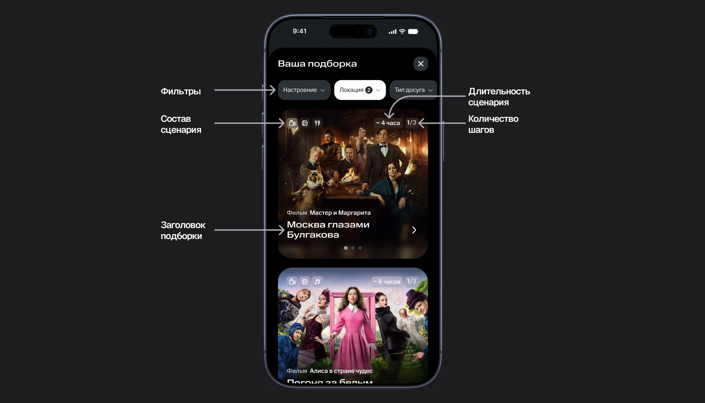

Досуговые сценарии

Проблема
Опрос показал, что пользователи «мало знают о подписке». В более детальном исследовании мы уточнили причину: сервисы МТС Premium пользователи видят и знают, но не понимают, как использовать их в повседневной жизни.
На первом скролле витрины уже был блок «Доступно по подписке» со всеми сервисами, входящими в подписку. Однако само перечисление не помогало понять, как использовать их в повседневной жизни: пользователь ограничивался одним-двумя привычными сервисами или не пользовался подпиской совсем.
Это снижало вовлечённость в экосистему и воспринимаемую ценность МТС Premium, а в долгосрочной перспективе создавало риск отключения подписки и вылияло на retention и LTV.
Стратегия и критерии успеха
Блок «Доступно по подписке» работал: перерабатывать его не было смысла. Проблема была не в знании состава подписки, а в отсутствии понятного повода ею воспользоваться.
Я предложила проверить, помогут ли готовые планы досуга вовлечь пользователей МТС Premium в разные сервисы и партнёрские предложения подписки.
Досуг выбрали первым направлением, поскольку он позволяет объединить несколько сервисов экосистемы и помогает быстро решить, чем заняться вечером, в дороге или в выходной.
Долгосрочная цель фичи
Увеличить использование двух и более сервисов внутри подписки. Если готовые сценарии станут регулярным способом выбирать досуг, они могут повысить вовлечённость, улучшить удержание и увеличить LTV.
Цель первого этапа
Проверить интерес к готовым сценариям и понять, помогают ли они перейти от просмотра витрины к конкретному предложению сервиса.
Критерий успеха
Конверсия из точки входа в открытие сценария.
Дополнительно проверяли
- Влияет ли обязательный выбор настроения и типа досуга на конверсию.
- В какой точке витрины пользователи чаще открывают сценарии.
- Какие запросы и форматы досуга они выбирают, чтобы развивать контент и партнёрства на основе спроса.
Исследование: какой сценарий выбрать первым
JTBD
Я проанализировала результаты опроса на витрине МТС Premium и выделила четыре ситуации, в которых пользователю нужна помощь с выбором досуга.
Общий вывод
В момент выбора пользователю важнее не изучить каталог контента, а быстро получить подходящую идею под свой контекст.
Гипотеза
Если объединить сервисы МТС Premium в готовые сценарии под жизненные ситуации, пользователи будут чаще открывать предложения подписки, потому что увидят конкретный план вместо набора возможностей, которые нужно самостоятельно сопоставлять.
Выделила способы показать сценарии
- Сначала выбор настроения и формата. Подборка потенциально точнее, но путь длиннее
- Сразу готовые сценарии. Путь короче, но меньше персонализации
Для быстрого запуска я нашла партнёра с готовыми сценариями и участвовала в обсуждении интеграции. Структурированный контентный фид позволил проверить механику без создания собственного каталога.
Первая версия: быстрый запуск на партнёрском контенте
Для первого запуска использовали готовый контент и интерфейс партнёра, чтобы быстро проверить интерес к механике.
Пользователь попадал в «Досуг по настроению» из витрины Premium и дальше шёл одним из двух путей: сразу к готовым сценариям или через выбор настроения, контекста и типа досуга.

Мы также тестировали sticky-кнопку как точку входа. После первого запуска убрали её: она конкурировала с другой фиксированной кнопкой для расширенного сегмента. Вместо неё встроили четыре точки входа в разные блоки витрины, чтобы сравнить их эффективность.

1 — Блок «Доступно по подписке», 2 — Блок «Новое в подписке», 3 — Баннер, 4 — Блок «Что входит в подписку»
Как проверяли
Первый запуск: пересобрали сегмент
Первый запуск не дал надёжного вывода: сегмент был слишком узким, а его пользователи редко заходили на витрину. Мы пересобрали аудиторию и перезапустили тест, чтобы набрать достаточно данных для сравнения вариантов.
Два этапа проверки
| Этап | Что сравнивали | Основная метрика | Методология |
|---|---|---|---|
| Путь к сценариям | Прямой вход vs обязательный выбор настроения и формата | Конверсия из точки входа в открытие сценария | А/В-тест |
| Точки входа | Баннер, «Новое в подписке», «Что входит в подписку», «Доступно по подписке» | CTR точки входа | Сравнение плейстментов на витрине |
Результаты
Выбор до выдачи не повысил конверсию
Факт
Конверсия в открытие сценариев в прямом пути и в пути через модалку была сопоставимой
Решение
Оставили прямой вход без обязательного выбора
Хотя обязательная персонализация не улучшила основную метрику, выбор тегов помог изучить предпочтения пользователей и выделить востребованные сценарии досуга.
Лучшая точка входа
Модалка выбора настроения дала данные для контента
Факт
Около 4 из 5 пользователей, начавших подбор, выбирали теги
Решение
Фильтры вернутся в следующей версии как опциональная персонализация
Факт
Чаще выбирали домашний досуг, видео и аудио
Решение
Начали договариваться с партнёрами о домашних сценариях
Факт
Часть пользователей выбирала одну категорию без дополнительных настроек
Решение
В выдаче появятся быстрые сценарии и более простая навигация
Долгосрочный эффект
В данный момент мы в процессе аналитической оценки: изучаем, как использование сценариев связано с вовлечением в два и более сервиса подписки, удержанием и LTV.
Следующая гипотеза: собственный путь сценария
Первый этап показал интерес к входу в сценарии, но не отвечал на вопрос, насколько понятна партнёрская подача после открытия. Поэтому я провела UX-аудит исходных карточек.
Задача аудита не «улучшить дизайн партнёра», а проверить, может ли пользователь быстро понять, подходит ли ему сценарий, что в него входит и какое действие сделать первым.
Я разобрала путь пользователя на четыре вопроса
| Этап | Вопрос пользователя | Что проверяла |
|---|---|---|
| Узнавание | Это подходит мне сейчас? | Контекст, настроение, формат, длительность, дома или офлайн |
| Понимание | Что я получу? | Название, состав сценария, связь между шагами |
| Выбор | Почему этот вариант, а не соседний? | Сканируемость и признаки для сравнения |
| Действие | Что произойдёт после нажатия? | Иерархия CTA и ясность следующего шага |
Дополнительно проверила когнитивную нагрузку, визуальную иерархию, консистентность с интерфейсом МТС Premium и возможность использовать партнёрский фид без переработки интеграции.
Не хватало объединяющего смысла
Исходное превью перечисляло отдельные материалы (книгу, спектакль, ресторан). Общую идею сценария приходилось считывать из их названий и описаний.
Решение: сделать главным элементом превью тематический заголовок. Он объединит предложения в один сценарий, а подпись на каждом слайде обозначает конкретную составляющую: фильм, книгу или ресторан.
Главное терялось среди подробностей
Длинные редакторские описания, цитаты и источники конкурировали с информацией, необходимой для выбора. Чтобы оценить предложение, пользователю приходилось читать большой объём текста.
Для сценария, который должен снижать усилие выбора, такая подача создавала лишнюю когнитивную нагрузку.
Решение: отказаться от длинных материалов и разделить информацию на два уровня. На превью оставить тему, длительность и количество шагов. На подробном экране — короткое описание, практические параметры и основное действие.
Сценарий распадался на отдельные слайды
Исходная подача не показывала весь состав маршрута одновременно. Чтобы понять, какие предложения входят в сценарий, нужно было просматривать слайды по очереди. Из-за этого фильм, книга и ресторан могли восприниматься как независимые рекомендации, а не как части одного плана.
Решение: добавить явную нумерацию и блок «Маршрут вечера» со всеми шагами. Пользователь видит структуру сценария и может открыть нужную часть напрямую. Нумерация обозначает положение в маршруте, а не факт прохождения.
Сценарии было трудно сравнивать
В исходных карточках не хватало заметных ориентиров для выбора: что входит в сценарий и сколько времени он займёт. Чтобы уточнить детали, пользователю приходилось открывать несколько вариантов.
Решение: добавить длительность сценария и состав на превью, а также фильтры над выдачей, чтобы пользователь мог сузить выбор по месту, компании, настроению и формату досуга. Тематические названия помогают сопоставлять идеи сценариев, а длительность оценивать, подходят ли они по времени.
Фильтры перенесли категории из первой модалки, но перестали быть обязательным шагом: пользователь сразу видит готовые сценарии и уточняет выдачу только при необходимости.

Статус и следующий тест
Новый путь ещё не запущен. Следующий эксперимент сравнит исходную партнёрскую подачу с вариантом в интерфейсе МТС Premium.
Основные метрики: конверсия из показа превью в открытие сценария и конверсия из открытия сценария в переход к действию внутри него.
Команда и мой вклад
Мой вклад
- Сформировала концепцию «Досуг по настроению» и защищала её перед продактом, аналитиком и партнёром
- Исследовала результаты опроса, сформировала JTBD и продуктовые гипотезы
- Нашла партнёра, вела коммуникацию и участвовала в подключении контентного фида
- Спроектировала пользовательские пути и точки входа для первого теста
- Провела UX-аудит партнёрского пути
- Спроектировала новый путь: карточки-превью, экран сценария и структуру шагов
- Подготовила дизайн к следующему эксперименту
С командой
- Приоритизировали гипотезы
- Определяли методологию тестов, метрики и сегменты
- Прорабатывали технические ограничения интеграции
- Принимали решения о запуске, изменении сегмента и следующих итерациях
Выводы
- Работа над фичей показала мне, что ценность эксперимента не сводится к росту конверсии. Тест модалки с обязательным выбором интересов не улучшил основную метрику, но помог понять предпочтения пользователей. Эти данные легли в основу следующих решений: какие сценарии предлагать и как сохранить персонализацию, не делая её обязательным шагом.
- Влияние фичи на использование нескольких сервисов, retention и LTV остаётся долгосрочной гипотезой. Её можно будет оценить только после запуска нового пути и настройки трекинга действий после открытия сценария.